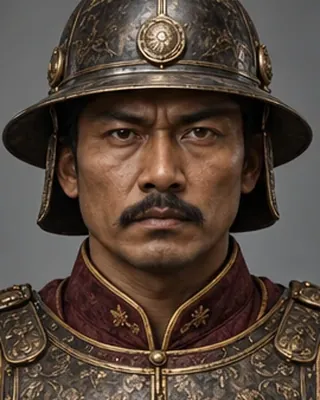

d. 1 April 1825 · Burmese commander-in-chief

Led 20,000 men to defeat Chandrakanta in 1822; killed at Danubyu in the First Anglo-Burmese War.
Record confidence: medium.
Open interactive profile
1821–1824
March–April 1822